MON 1.1 : Apprendre à utiliser Figma
- MON
- 2024-2025
- temps 1
- saumon
- figma
- UI
- Kévin BERNARD
Je souhaite découvrir l'utilisation de figma, une application de design d'UI et d'UX, dont j'ai seulement vu mes amis utiliser pour pouvoir réussir à faire le joli Mock-up lié à mon POK1.
Pas de prérequis
SOURCES
Table des matières
1.Introduction
L'objectif de ce MON était de me familiariser avec figma et ses principaux outils. Grâce à ses connaissances j'ai pu me créer un Mockup ou autrement dit une maquette pour mon site web.
Petite présentation
Bon, dans un premier temps qu'est-ce que c'est que Figma ? Figma est une application de design où l'on construit la maquette de notre futur site web, application.
Grosso modo, on représente les pages du site/de l'application que l'on veut faire. Il n'y a pas de code, simplement des composants (rectangles, textes, icônes...) que l'on utilise pour avoir une idée de l'apparence finale des pages.
Pourquoi c'est utile ? On sait où on va!
Donc
- On réfléchit indirectement à notre code en plaçant les éléments en avance.
- On ne fait pas mille et un aller-retour parce qu'on n'est pas satisfait de l'apparence de nos pages.
Desktop
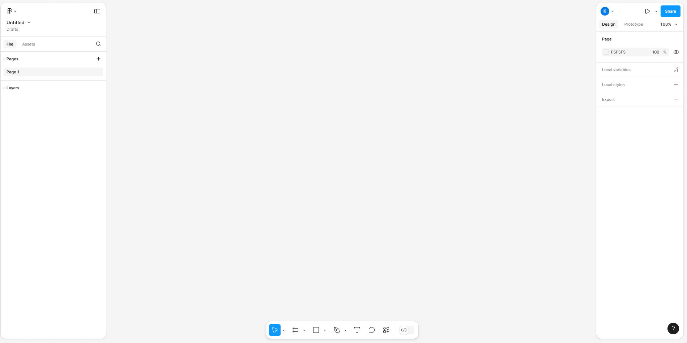
Alors voilà sur quoi on arrive quand on ouvre un design file sur Figma (je vous fais confiance pour arriver jusque là 😉).
On peut définir 4 zones qu'on va utiliser : 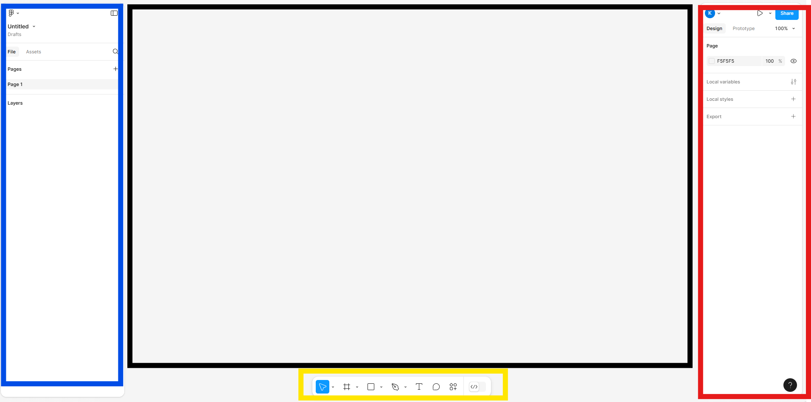
On va avoir :
- L'explorateur : c'est là où seront listés nos composants (textes, images, carrés, cercles...).
- Le bureau : c'est là que s'affiche nos pages et basiquement là où on rajoute nos composants.
- Les paramètres : c'est là que l'on va pouvoir modifier nos composants (couleur, taille, police, épaisseur, opacité...)
- Les outils : ce sont les outils que l'on utilise pour ajouter les composants.
2.Fonctionnement des Frames
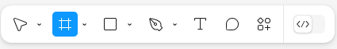
En cliquant sur cet icône dans la partie outils on va pouvoir tracer un rectangle qui définira une frame. On peut aussi choisir un type de frame prédéfini dans la partie paramètres.
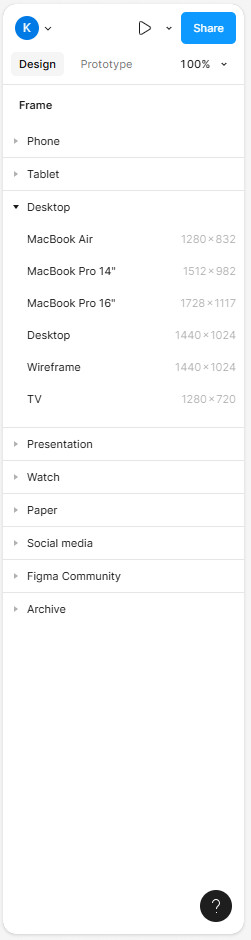
Les frames sont ce qui va nous servir de zones de rangement pour tous nos composants. Elles représentent la taille de nos écrans (écran d'ordinateur, d'iphone, de smartphone...) mais aussi des zones contenant des composants.
Ainsi on va pouvoir mettre des frames dans des frames ce qui va former une hiérarchie, comme avec nos dossiers, visible dans la zone explorateur.
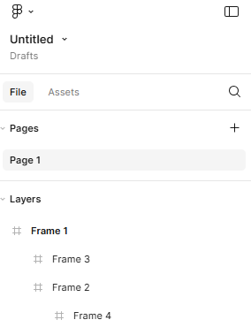
🚨Petite attention s'il-vous-plaît ! Utiliser des FRAMES plutôt des formes quand vous voulez mettre des composants dedans/devant. Les frames permettent plein de choses dont deux très utiles : avoir le même espacement entre vos composants ou bien tous les centrer dans la frame.
3.Composants
Maintenant que l'on a nos frames, on peut rajouter nos composants avec la partie outils. Je ne parle ici que de ceux principalement utilisés et de même pour leurs paramètres.
Formes
Dans les outils, on peut créer différentes formes...
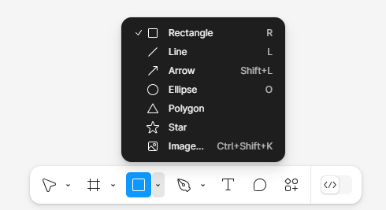
...et sur le bureau cela donne ceci :
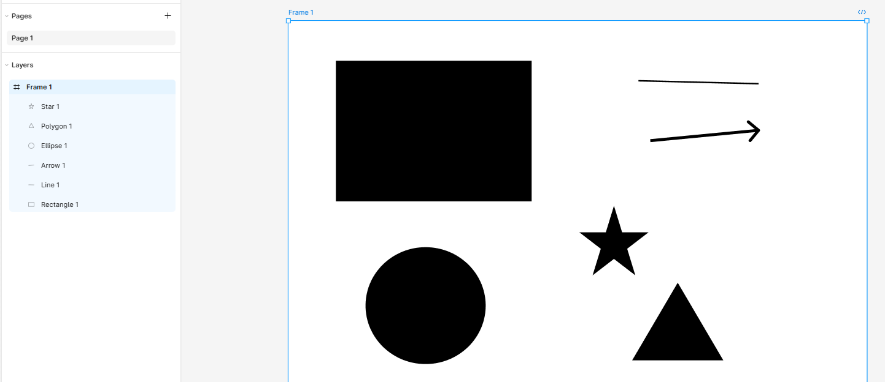
Ensuite dans les paramètres, on peut modifier la couleur, la position dans la frame, les contours...
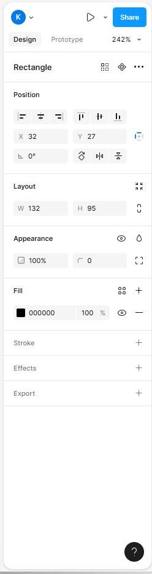
On peut aussi insérer des images mais on va voir qu'on peut faire beaucop plus simple.
Images
Il suffit de faire Ctrl + C et Ctrl + V, voilà c'est tout !
Après on peut toujours aller dans les paramètres pour rogner, changer l'opacité, rajouter des contours...
Textes
On sélectionne l'outil texte ou, plus rapide, on tape T
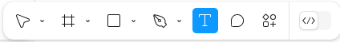
...et dans les paramètres on change la police, la taille...
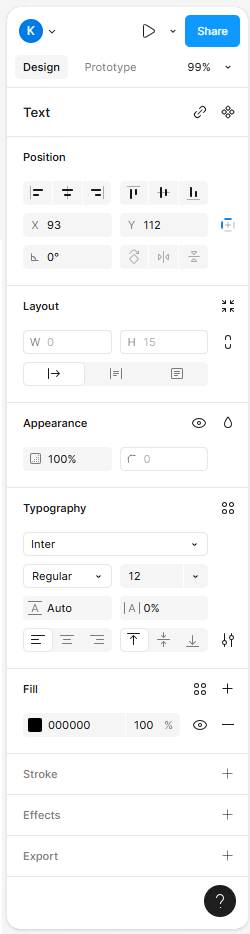
Icônes
Pour les icônes c'est comme les images, on va faire un Ctrl + C et Ctrl + V mais attention, on copie un icône d'un fichier Figma.
C'est pas trop compliqué, il suffit de chercher "figma free icons" sur le navigateur et d'ouvrir le premier lien. Vous aurez quelque chose de similaire à ceci :
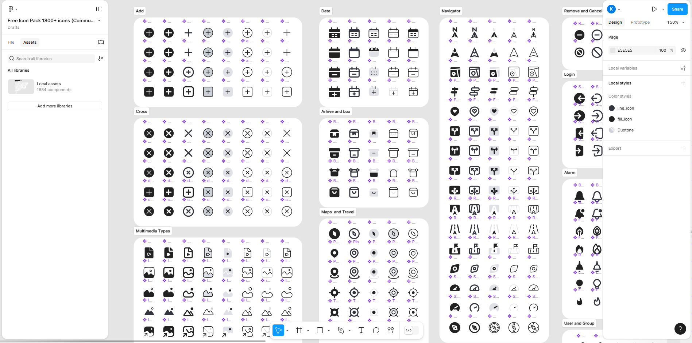
Sinon l'autre solution c'est de sélectionner des icônes via une librairie téléchargée...
4. Librairies
Présentation
Une librairie c'est très simple, c'est un ensemble de composants stylisés. De mon côté je me suis plutôt intéressé aux UI Kit qui sont dédiés à la création d'interfaces utilisateurs. On va y trouver des boutons, des icônes, des barres de navigations, des polices préfaites (pour les différents titres par exemple : h1, h2...) et plein, pleiiin d'autres choses.
Petit exemple avec des composants stylisés de la librairie d'iOS 18 : 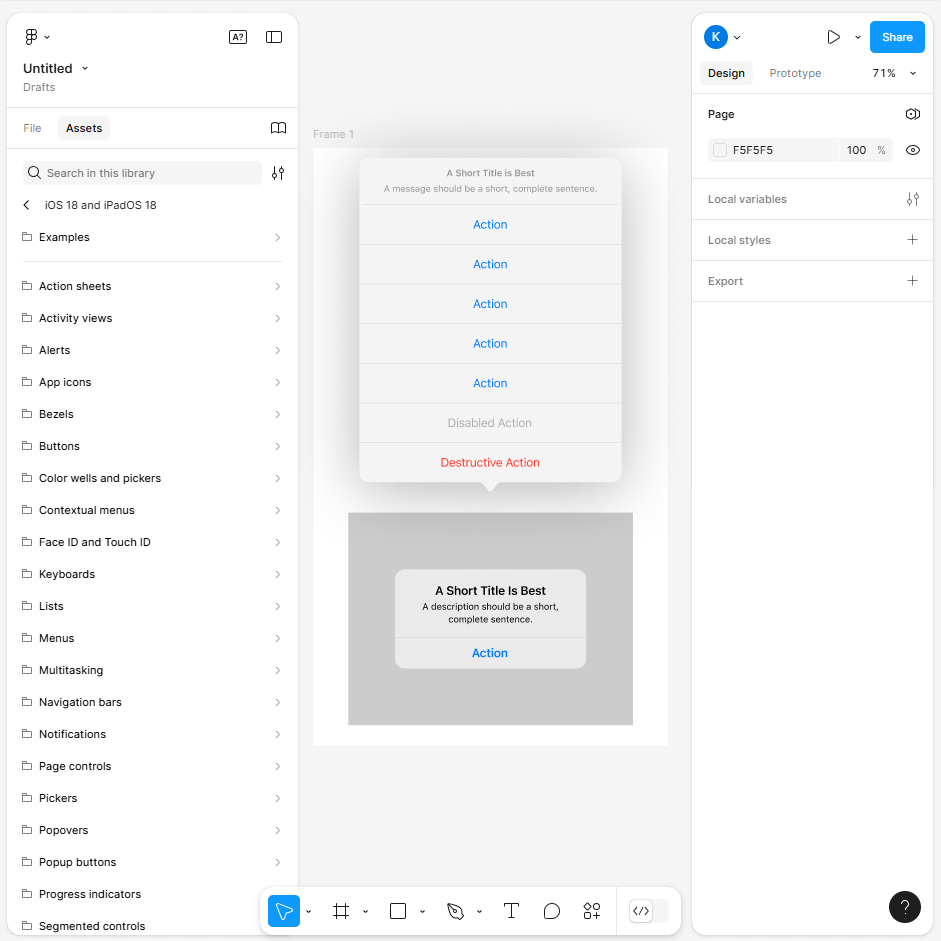
Ce qui est bien avec Figma c'est qu'il y a une communauté où tout le monde peut publier ce qu'il fait et on retrouve à la fois les librairies des composants de google, d'android... mais aussi d'autres réalisées par des particuliers.
Télécharger une librairie
Dans un premier temps, on revient sur notre compte Figma avec nos fichiers et on va explorer le contenu de la communauté.
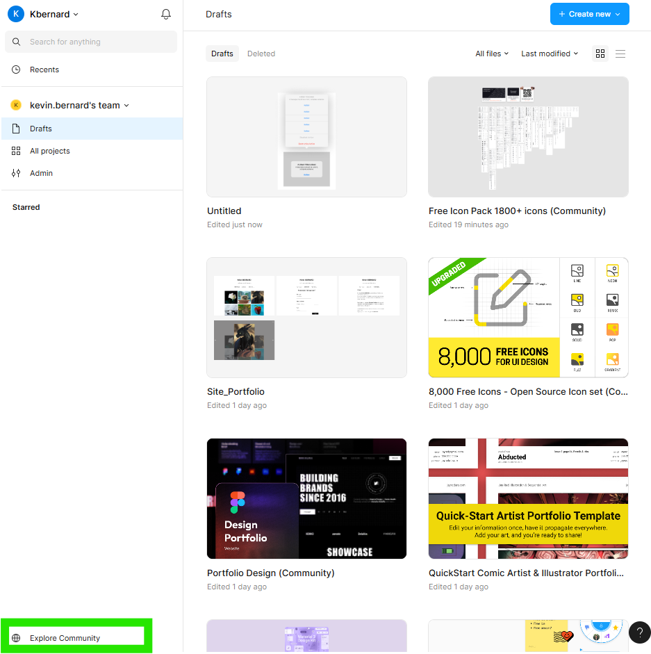
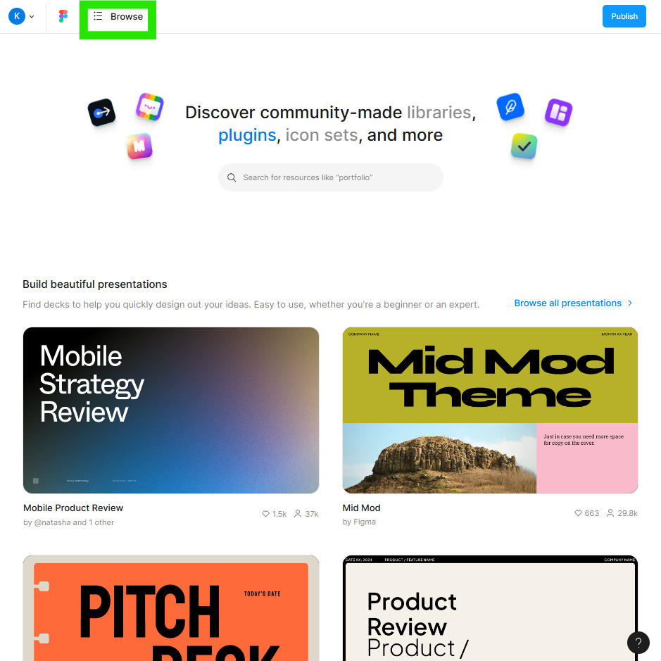
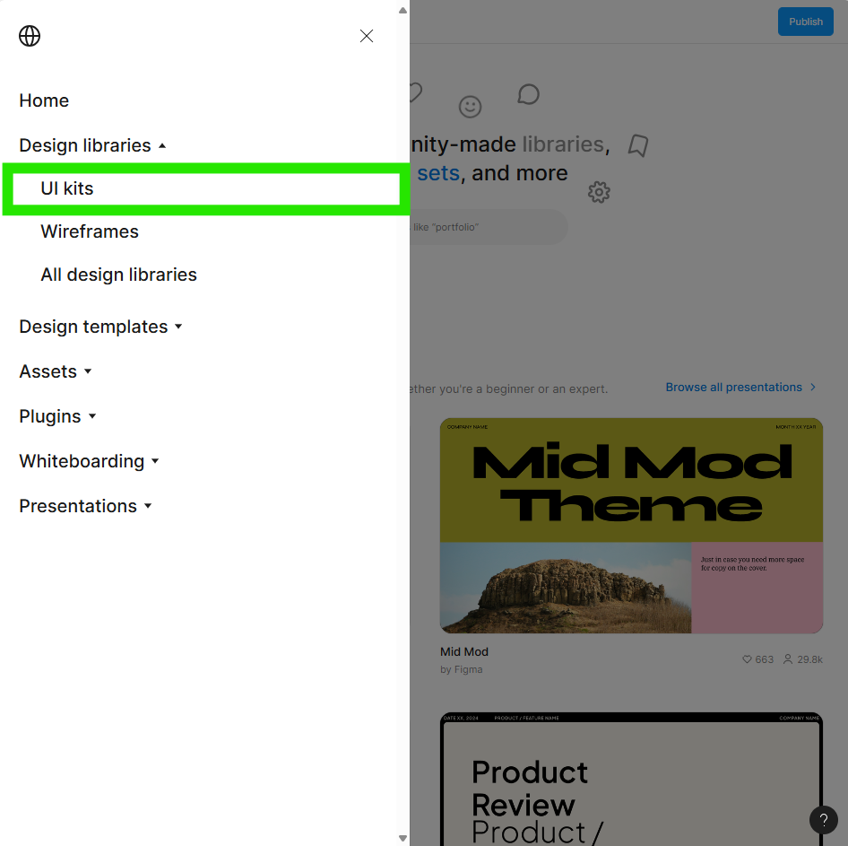
Une fois le UI Kit choisi, il reste plus qu'à l'ouvrir.
On publie la librairie dans son répertoire. 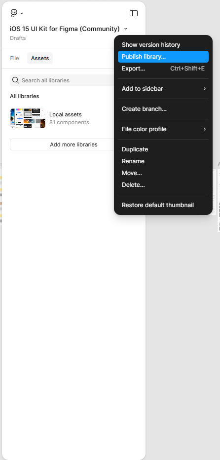
Ajouter la librairie au projet
On revient sur notre fichier figma et on va sur Assets dans notre explorateur.
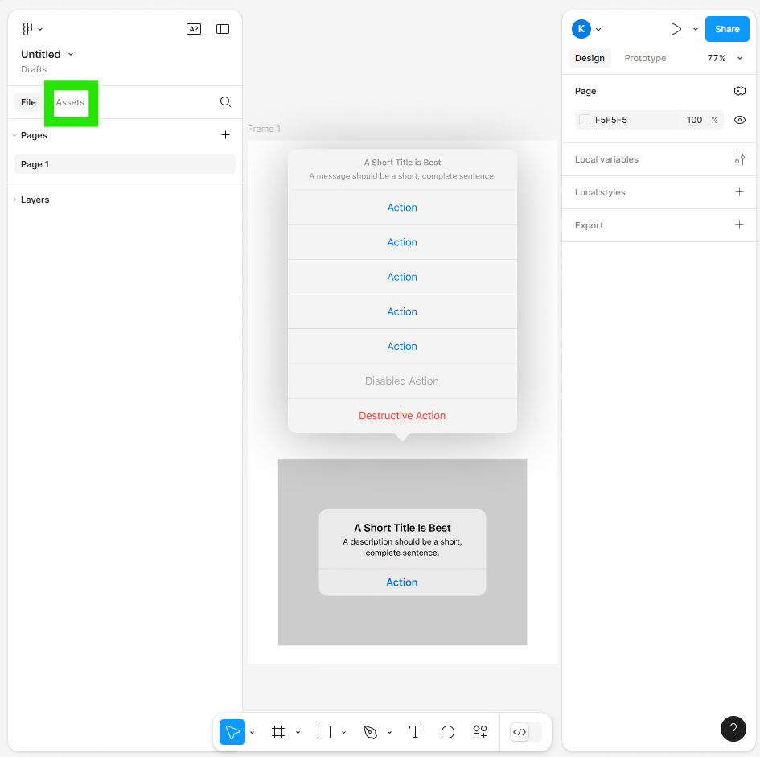
Il ne reste plus qu'à ajouter la librairie :
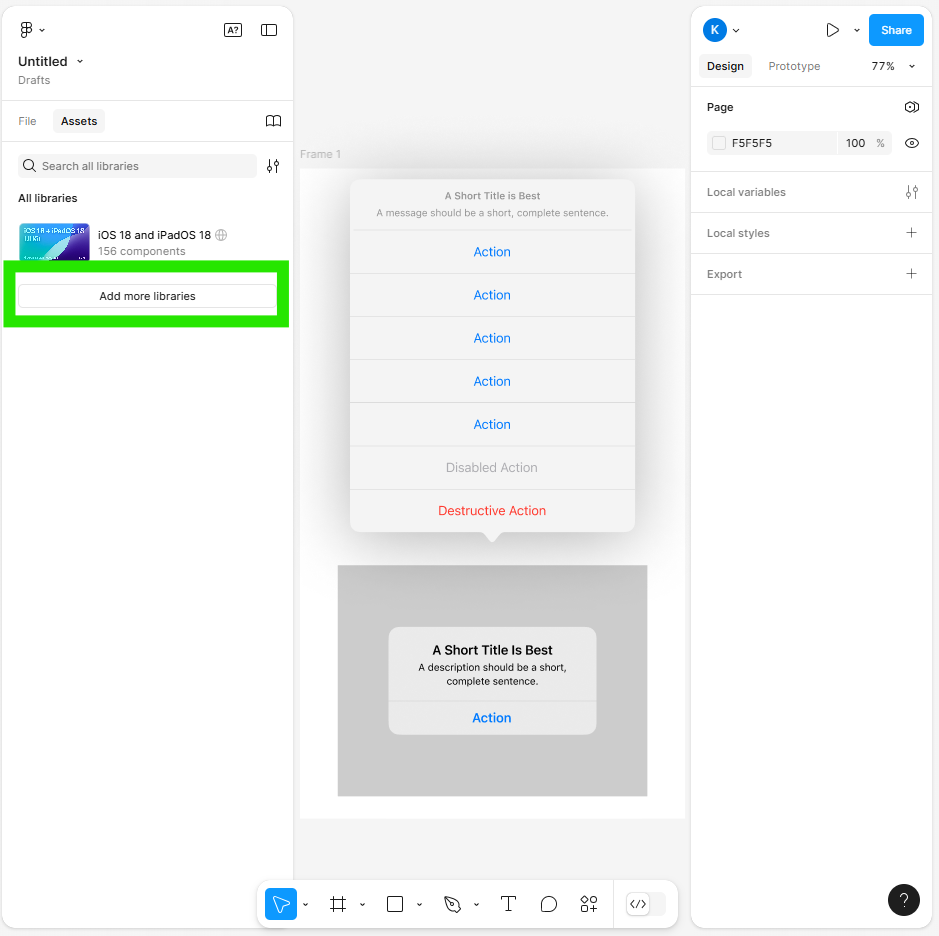
Remarques : On retrouvera les nouveaux composants stylisés toujours dans la partie Assets.
5.Conseils pratiques
Maintenant que l'on a vu tout ce que l'on pouvait mettre dans nos frames :
- formes
- images
- textes
- icônes
- composants stylisés
Il ne nous reste plus qu'à parler des conseils praticos-pratiques dans leur utilisation.
Organiser ses frames
C'est le truc de base. Plus nos frames sont organisés, plus c'est lisible et on s'y retrouve.
Je vous conseille d'avoir une frame pour les différentes parties de vos pages : le header, la barre de navigation... Et surtout nommer vos frames.
Template
Cela fait écho au conseil précédent. En ayant des frames qui reviennent souvent dans vos pages vous pouvez faire une templates avec ces frames récurrentes pour vous faciliter la vie.
Raccouris
Liste de raccourcis utiles :
- 'Crtl + D' : duppliquer
- 'Shift' : sélection multiple
- 'F' : ajouter une frame
- 'R' : ajouter un rectangle
- 'T' : ajouter un texte
6.Conclusion
Cela m'a été très utile, et j'ai vraiment pu apprendre et l'utiliser pour mon projet perso. Clairement, je ferai toujours une maquette sur figma avant de coder.
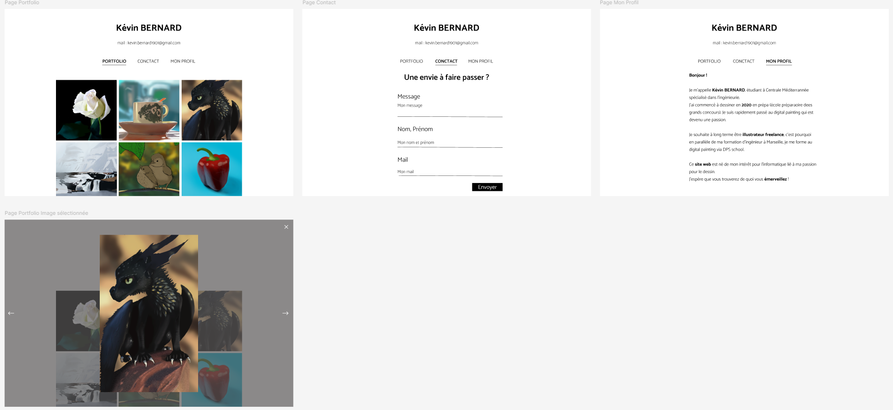